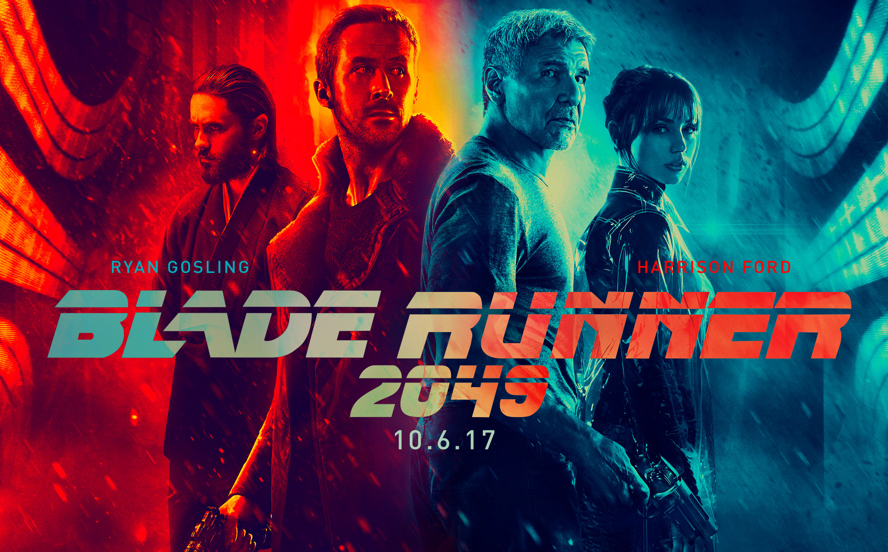
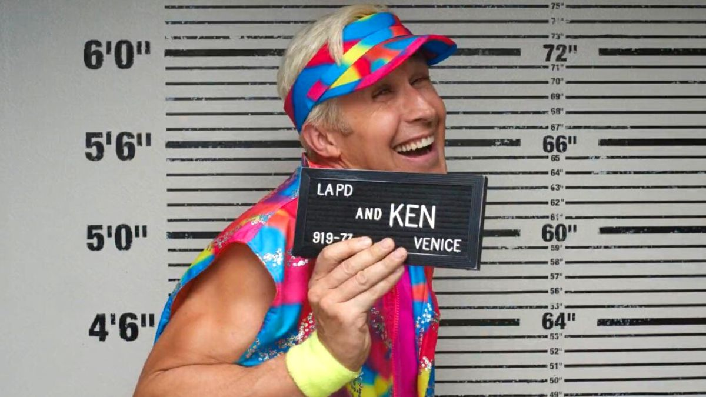
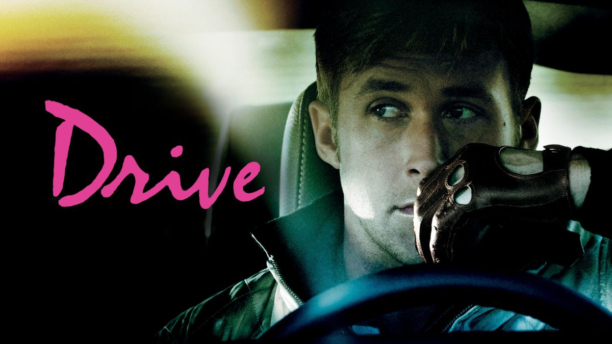
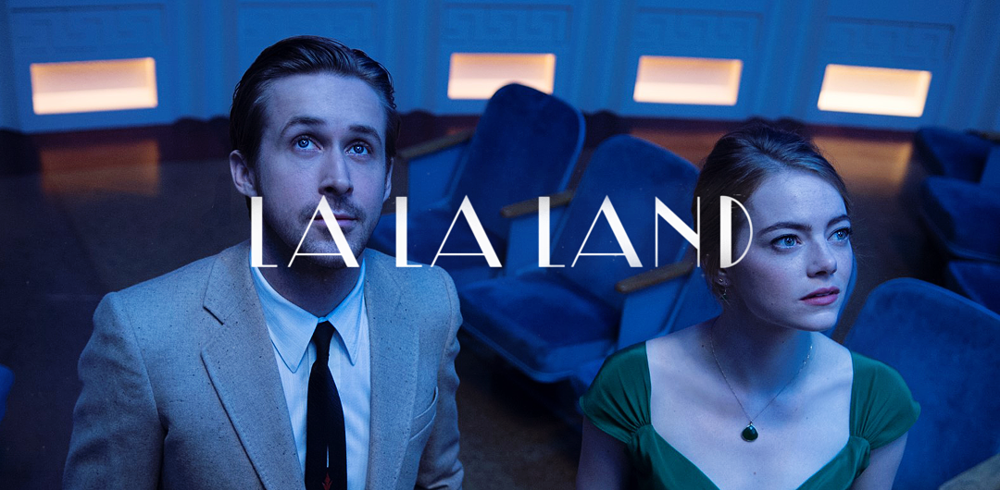
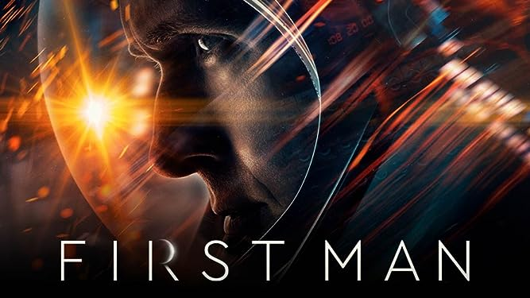
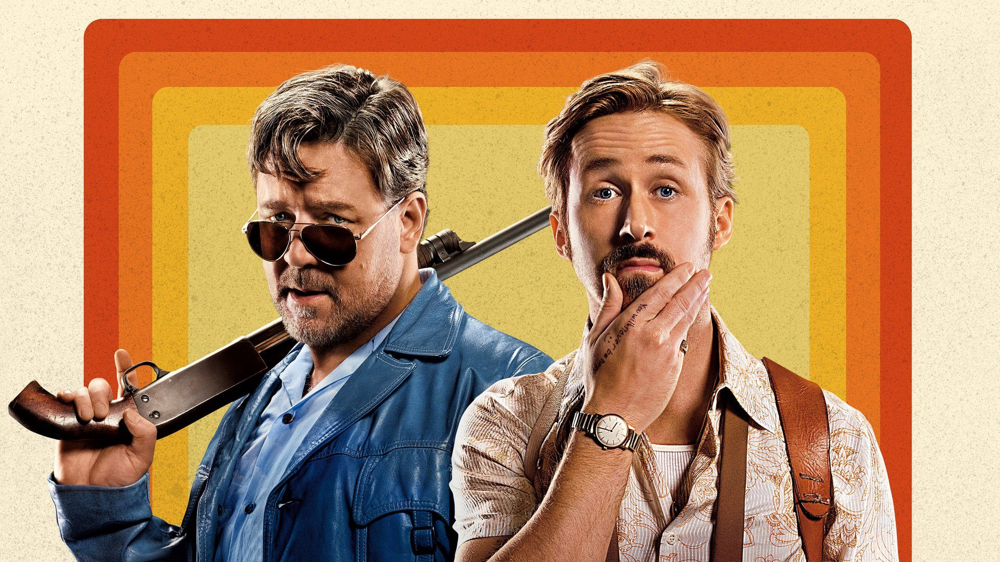

My projects

Blade runner 2049
The film takes place after the events of the first film, following a new Blade Runner, LAPD Officer K. K unearths a long-buried secret that has the potential to plunge what is left of society into chaos, leading him on a quest to find Rick Deckard, a former LAPD Blade Runner who has been missing for thirty years.

Barbie
Based on the Barbie fashion dolls by Mattel, it is the first live-action Barbie film after numerous computer-animated direct-to-video and streaming television films. The film follows Barbie (Margot Robbie) and Ken (Ryan Gosling) on a journey of self-discovery following an existential crisis

Drive
Driver is a skilled Hollywood stuntman who moonlights as a getaway driver for criminals. Though he projects an icy exterior, lately he's been warming up to a pretty neighbor named Irene and her young son, Benicio. When Irene's husband gets out of jail, he enlists Driver's help in a million-dollar heist.

La La Land
The film revolves around the intertwining lives of two dreamers, an aspiring actress and a jazz musician, as they navigate the highs and lows of life in Los Angeles. This city, often referred to as “La La Land,” is a place where fantasy and reality collide.

First man
A look at the life of the astronaut, Neil Armstrong, and the legendary space mission that led him to become the first man to walk on the Moon on July 20, 1969.

The nice guys
Holland March (Ryan Gosling) is a down-on-his-luck private eye in 1977 Los Angeles. Jackson Healy (Russell Crowe) is a hired enforcer who hurts people for a living. Fate turns them into unlikely partners after a young woman named Amelia (Margaret Qualley) mysteriously disappears.